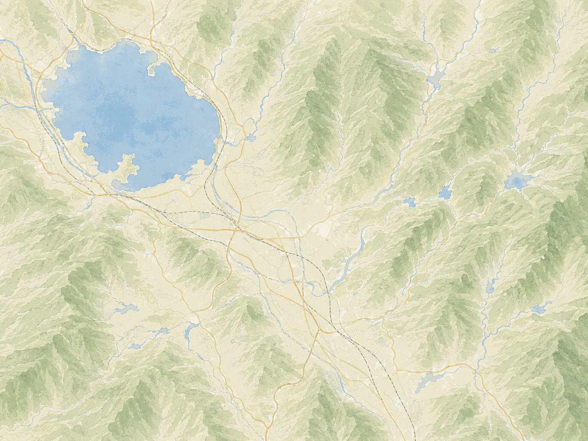

WOODMAN plus ACCESS
ACCESS
お店へのアクセス
AROUND WOODMAN plus
周辺観光スポットからの
アクセスもご案内しています
八ヶ岳・諏訪・蓼科エリアの観光スポットから
WOODMAN plusまでのアクセスをご確認いただけます。
INFORMATION
WOODMAN plus
ADDRESS
〒391-0002
長野県茅野市塚原2丁目3-6
TEL
0266-72-3813
OPENING HOURS
ランチ 11:30〜14:30
ディナー 18:00〜20:30
CLOSED
水曜日
木曜日
※不定休あり
PARKING
駐車場あり
BY TRAIN
電車でお越しの方
JR茅野駅から徒歩約8分。
BY CAR
車でお越しの方
お車でお越しのお客様は 店舗の駐車場をご利用ください。
AROUND WOODMAN plus
周辺スポットからのアクセス
地図上のスポットをタップすると、 WOODMAN plusまでのアクセスをご確認いただけます。

plus